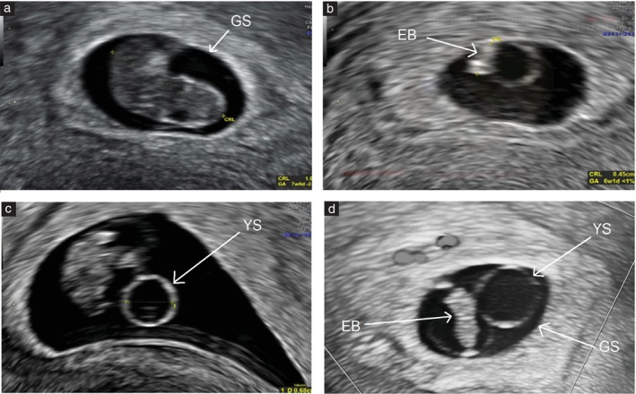

Ficha del catálogo
Gestación no evolutiva del primer trimestre
- Sistema
- Reproductor
- Modalidad
- US
- Región
- Útero, gestación temprana
- Dificultad
- Intermedio
Se refiere al embarazo intrauterino que ha detenido su desarrollo, ya sea porque el embrión no muestra actividad cardiaca o porque el saco gestacional no evoluciona. Es un motivo frecuente de consulta por sangrado o dolor en el primer trimestre. El diagnóstico exige criterios estrictos, porque una conclusión precipitada puede llevar a interrumpir una gestación viable.
Técnica
El ultrasonido transvaginal con transductor de alta frecuencia es la técnica de elección porque permite medir con precisión el saco, el embrión y la actividad cardiaca. La medición se realiza en el plano adecuado y se combina siempre con la clínica y con la evolución de la gonadotropina coriónica. Ante datos dudosos la conducta correcta es repetir el estudio tras un intervalo suficiente.
Qué observar
- Presencia y localización del saco gestacional y del saco vitelino
- Longitud craneocaudal del embrión y presencia de actividad cardiaca
- Diámetro medio del saco gestacional cuando no se identifica embrión
- Contorno del saco, su posición en la cavidad y el aspecto del trofoblasto
- Hematoma subcoriónico y su extensión
- Cambios respecto al estudio previo y tiempo transcurrido entre ambos
Hallazgos
El diagnóstico se establece cuando se identifica un embrión de tamaño suficiente sin actividad cardiaca o un saco gestacional de diámetro adecuado sin embrión en su interior. Otros datos de apoyo son un saco de contorno irregular o de implantación baja, la ausencia de embrión tras un intervalo suficiente desde la visualización del saco vitelino y la falta de crecimiento entre estudios. Con frecuencia se asocia un hematoma subcoriónico.
Perlas
Ante cualquier duda, la mejor decisión es repetir el estudio en lugar de forzar el diagnóstico, ya que el error de fechas es muy común y una gestación temprana normal puede parecer detenida. Los criterios diagnósticos deben aplicarse con márgenes amplios y con mediciones reproducibles obtenidas en el plano correcto.
Diagnóstico diferencial
- Gestación intrauterina viable temprana
- Muestra crecimiento adecuado en el control y aparición de actividad cardiaca en el plazo esperado.
- Embarazo ectópico con pseudosaco
- El pseudosaco es central, sin anillo trofoblástico ni saco vitelino, y hay masa anexial con líquido libre.
- Aborto en curso o incompleto
- El saco se sitúa en el canal cervical o quedan restos vascularizados en la cavidad, con sangrado activo.
- Enfermedad trofoblástica gestacional
- La cavidad contiene tejido con múltiples espacios quísticos y valores de gonadotropina muy elevados.
Simuladores
- Error en la datación por ciclos irregulares o concepción tardía
- Saco gestacional visualizado con equipo de baja resolución o por vía abdominal
- Movimiento materno que impide detectar una actividad cardiaca lenta
Por modalidad
- US
- Es la única técnica indicada, valora el saco, el embrión, la actividad cardiaca y la evolución entre controles.
- RM
- No tiene papel en esta situación y se reserva para dudas sobre implantaciones anómalas o masas asociadas.
Protocolo
Ultrasonido transvaginal con vejiga vacía, midiendo la longitud craneocaudal en el plano sagital medio y el diámetro medio del saco a partir de tres diámetros ortogonales, con modo M para documentar la actividad cardiaca. Se limita el uso de Doppler sobre el embrión por criterios de prudencia con la energía acústica. Ante hallazgos indeterminados se programa un control en un intervalo suficiente antes de tomar decisiones.
Clasificación
Errores frecuentes
- Diagnosticar la detención con mediciones límite y sin repetir el estudio
- Medir la longitud craneocaudal en un plano oblicuo y subestimar el tamaño real
- No buscar la localización del saco y pasar por alto una implantación anómala

gestación no evolutiva primer trimestre longitud craneocaudal saco gestacional actividad cardiaca ecografía transvaginal hematoma subcoriónico